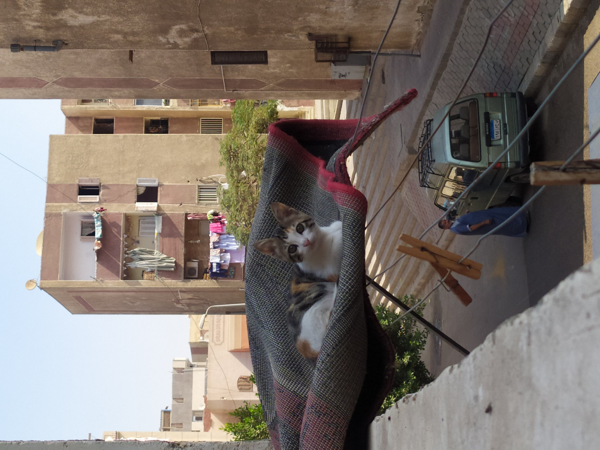
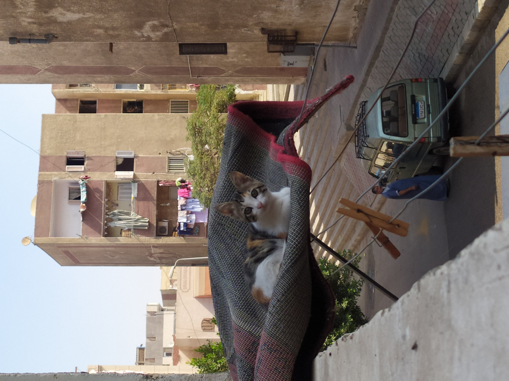

Samuel Green
Available to Walk- That sounds great. I’d be happy with that.
- Could you send over some pictures of your dog, please?
-

 

- Here are a few pictures. She’s a happy girl!
- Can you make it?
- She looks so happy! The time we discussed works. How long shall I take her out for?
-
30 minute walk
$29
-
1 hour walk
$49
Type a message…
Simple booking
Stay in touch with our dog walkers through the chat interface. This makes it easy to discuss arrangements and make bookings. Once the walk has been completed you can rate your walker and book again all through the chat.